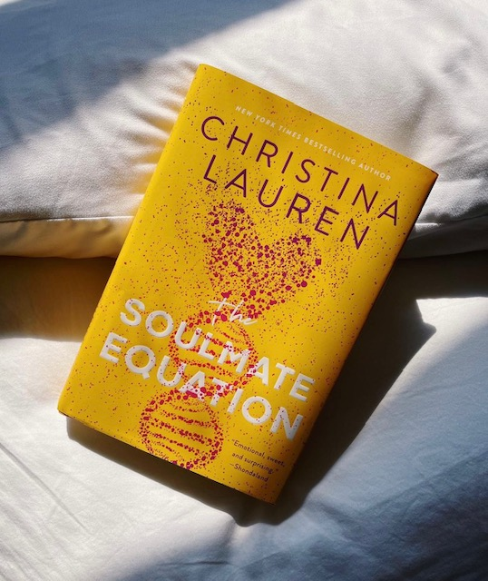
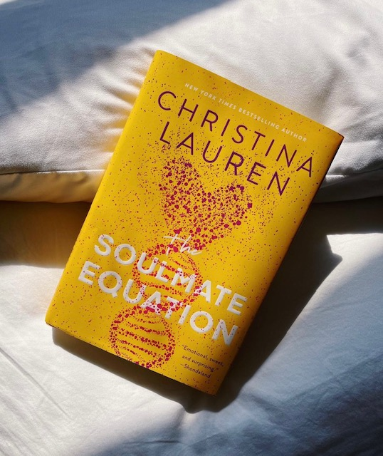

What's more essential to summer than a beach read? This season is the most crucial time for cute romances and beachy tales that will have you beaming as bright as the sun!
Books are for every season. Whether you are an aspiring reader or are just wanting to pick up a quick read, this website will help you navigate your next pick! Each of these reads are atmospheric and will transport you into a whole new world.
Each section of seasons has corresponding books that fit that seasons overall feel. You will be able to determine which best suits your mood and get yourself ready to hunker down with a new cozy read.


 
